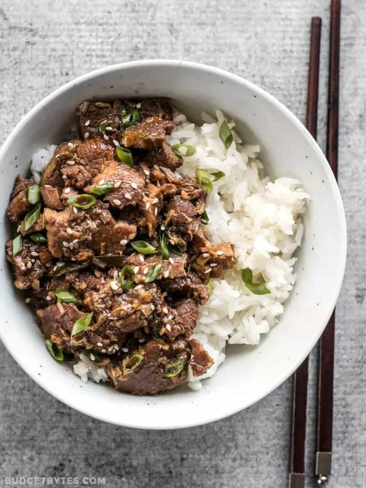

Slow Cooker Sesame Beef

How to serve slow cooker sesame beef
This tasty shredded beef can be used in so many ways. You can use it in a bowl meal like Bibimbap, or do a more simple combo with just some warm rice and broccoli florets. Asian inspired tacos are always fun, or you can just pile it on top of a crunchy cabbage salad.
One more note about the type of beef used. I used an eye of round roast because there wasn't much of a selection at my store the other day, and this cut was the best price. Eye of round is quite lean, so the resulting beef had more of a flakey texture. A chuck roast or brisket would be more ideal as both have a little more fat and connective tissue, which will result in a more tender and moist shredded beef.
I am use a 6-quart Hamilton Beach slow cooker (affiliate link), and it was only filled about 1/3 of the way to the top. I would suggest using a 3-quart or larger for this recipe.
Ingredients
- 1/2 cup soy sauce
- 1/3 cup brown sugar
- 2 cloves garlic
- 1/2 Tbsp grated fresh ginger
- 1 tsp toasted sesame oil
- 2lb beef roast
- 6 green onion, divided
- 1 Tbsp cornstarch
- 1 Tbsp sesame seeds
Cooking Directions:
- Combine soy sauce, brown sugar, and half cup water in a bowl and stir until surgar is dissolved. Mince garlic and grate the ginger. add garlic, ginger, and toasted sesame oil to the soy sauce mixture. Set cookign sauce aside.
- Either slice or cube the beef roast. Slice three of the green onions into 2in sections (save the rest for garnish). Placve the beef roast and green onions into the slow cooker. Pouir the cooking liquid over top and stir to combine.
- Place lid on slow cooker and cook on HIGH for four hours. After cook time, beef should be very tender and shred easily with a fork. If not, replace lid & cook for an additional 30-60 min.
- Once beef is tender, add corstarch to 2 Tbsp of water and pour into pot with beef and cooking liquid. Stir to combine and allow it to come back up to a simmer, at which point the sauce will thicken slightly. Turn off heat and garnish with sesame seeds and remaining green onions. Serve over bed of rice or as part of your favorite meal